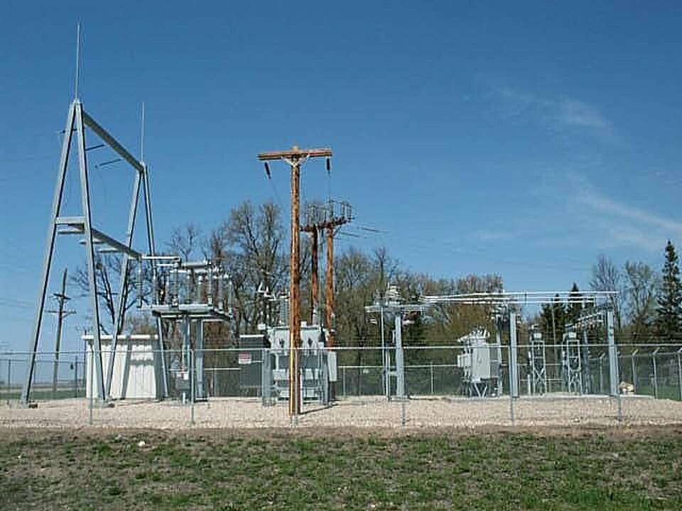
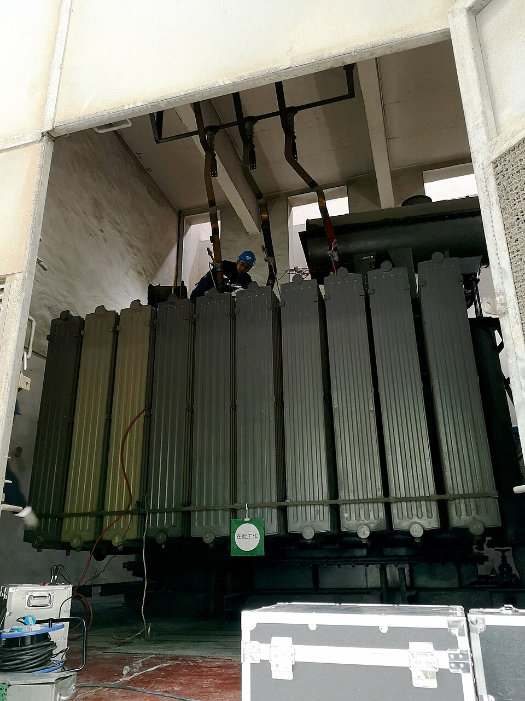
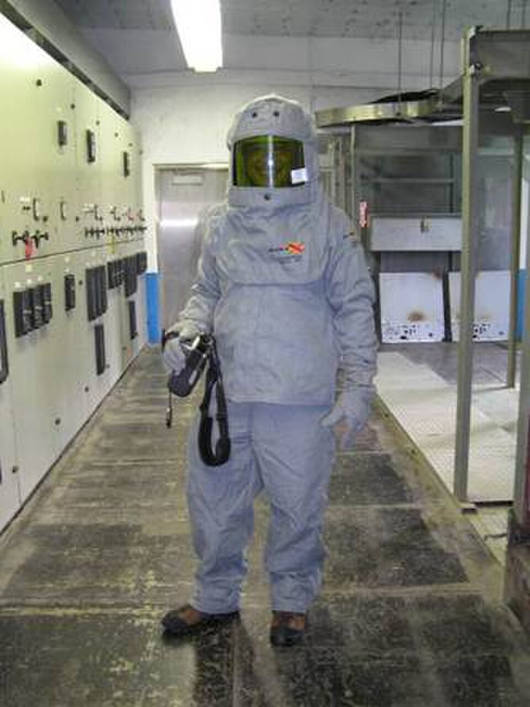

Disponibilidad operativa
La identificación temprana de degradación permite programar intervenciones y reducir la probabilidad de fallas inesperadas.
PowerAI-Energy aplica un enfoque de mantenimiento basado en condición para transformar inspecciones, pruebas, hallazgos y tendencias en acciones técnicas sobre equipos y sistemas eléctricos de potencia.

La identificación temprana de degradación permite programar intervenciones y reducir la probabilidad de fallas inesperadas.
Los resultados de inspección y prueba alimentan decisiones sobre equipos críticos, prioridades y recursos de mantenimiento.
La trazabilidad de condición, mantenimiento y hallazgos ayuda a conservar el conocimiento técnico del equipo a través del tiempo.
El estado del activo se interpreta considerando condición, criticidad, historial, carga, ambiente y evidencia complementaria.

Seguimiento del estado del activo, trabajos de prueba, antecedentes y mantenimiento programado.

Identificación de patrones térmicos para orientar diagnóstico, priorización y programación de acciones.
Una inspección infrarroja puede proporcionar evidencia valiosa sobre conexiones, barras, interruptores y otros componentes accesibles. Para una interpretación técnicamente defendible se deben considerar las condiciones de carga, emisividad, ambiente, configuración, distancia de medición, antecedentes y demás evidencias disponibles.

La estructura se centra en identificar equipos, determinar necesidades de mantenimiento, ejecutar inspecciones y pruebas apropiadas, documentar resultados y establecer acciones correctivas.
Equipo, función, criticidad y documentación.
Condición, historial y necesidades de mantenimiento.
Actividades según equipo y alcance técnico.
Corrección, planificación y seguimiento.
Evidencia, trazabilidad y mejora continua.
Asesoría en sistemas eléctricos de potencia, termografía infrarroja y mantenimiento basado en condición.
Las fotografías externas se utilizan como referencias de entornos eléctricos industriales. Sus fuentes y condiciones de uso se relacionan a continuación.